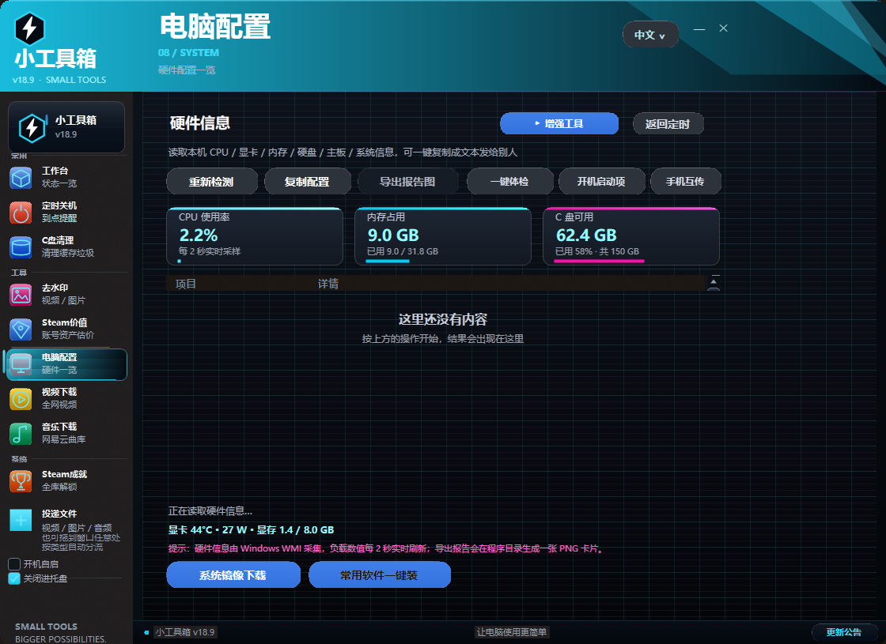
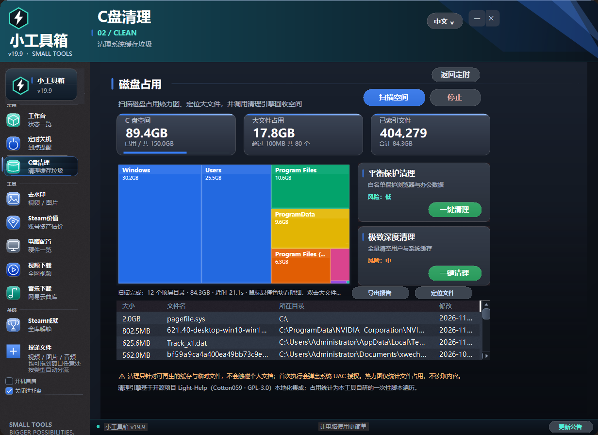

一台电脑的小事，
交给它就行。
定时关机、C 盘清理、Steam 进阶、视频与音乐下载、去水印、局域网剪贴板、录屏、单文件加密…… 20+ 项日常工具打包进一个 exe，免安装、不写注册表，五套皮肤一键换。

常用的小事，都做成了一键
每个功能都能从首页直达，也能用 Ctrl+K 指令舱输几个字跳过去。
定时关机
定时、倒计时、每日重复，关机前 60 秒可撤销，顺手记一条历史。
C 盘清理
按类别列出缓存、日志、缩略图、回收站，勾选后统一清，删进回收站可撤回。
Steam 进阶
库清单、价格与愿望单、节点测速，挑最快的下载区。
视频 / 音乐下载
贴链接解析，队列式下载，字幕与音轨可单独抽。
去水印
框选区域自动修补，批量处理整文件夹。
局域网剪贴板
手机浏览器读写电脑剪贴板，同一 Wi-Fi 下不用发微信。
录屏 / GIF 工坊
Ctrl+Alt+R 启停，硬件编码出 MP4，一键压成 GIF。
单文件加密
文件拖进来加密成 .mtbx，密码解回，支持整文件夹。
批量重命名 / 转换
整文件夹改名，图片、音频、视频、GIF 一键转格式。
手机互传
扫码即连，浏览器上传下载，不装 App。
全局热键中心
截图、互传、录屏、加密都能绑组合键，游戏中也能触发。
插件仓库
内置示例插件 + 远程源 + 本地缓存，断网也能浏览安装。
五套皮肤，随时换一张脸
外观设置里有缩略预览、95–115% 界面缩放与跟随系统 DPI，改完自动重启生效。

真实的界面，不是效果图
全部为程序实拍：工作台、C 盘清理、外观设置。

企业里也能放心铺开
策略管控、审计留痕、更新验签、脚本化部署——个人用户不受影响，管理员可集中收紧。
策略文件 策略.json
放程序目录只影响这一份安装；放 %ProgramData%\MiniToolbox\ 全员生效，本地可再覆盖。
// 只收紧，不放宽；删掉文件即恢复默认
{
"禁用在线更新": true,
"禁用诊断导出": false,
"详细日志": false,
"禁用功能": ["video", "music"]
}
禁用功能支持槽位名或中文名：home / power / clean / wm / val / sys / video / music / sam / reinstall，或「视频下载」「音乐下载」。
越权时会怎样
直接拒绝，提示管理员策略按默认放行，记一条诊断立即恢复默认审计与更新验签
日志\审计.log · 1MB 滚动启动 / 退出 / 清理 / 重装 / 更新 / 导出诊断SHA256 + 证书指纹一致才替换日志\小工具箱.log · 1MB × 3 · 已脱敏部署脚本（无需管理员，装到当前用户）：
# 安装到 %LOCALAPPDATA%\MiniToolbox，建开始菜单与卸载项 .\部署.ps1 # 开机自启 / 查看状态 / 卸载 / 生成机器级策略模板 .\部署.ps1 -Install -AutoStart .\部署.ps1 -Status .\部署.ps1 -Uninstall .\部署.ps1 -MachinePolicy
脚本与 策略示例.json 都在仓库根目录，和 exe 放同一文件夹即可运行。
最近的几个版本
程序里也能看：关于页 → 更新日志，按版本分块的时间线。
v19.10 精简
- 下线「投递文件」入口、整窗拖放与投递遮罩，侧栏更干净。
- 文件拖进窗口不再跳转分流；「开机自启」「关闭进托盘」上移补位。
v19.9 企业
- 企业策略
策略.json：禁用在线更新 / 诊断导出、按页禁用功能、强制详细日志，机器级全员生效。 - 审计日志
日志\审计.log：清理、重装、更新、导出诊断逐条留痕，1MB 滚动。 - 更新包证书指纹校验；
部署.ps1支持安装 / 卸载 / 状态 / 策略模板，带开始菜单与卸载项。
v19.8 工程
- 全仓 1,182 处空 catch 接入统一忽略日志，默认零开销；配置里 diagVerbose=true 才逐条记录。
- 忽略日志带文件与行号，异常被吞也能一眼定位，例如 MainForm.Ui.cs:3837 | NullReferenceException。
- MainForm.cs 由 23,926 行拆成 6 个 partial 文件，界面、功能与配置完全不变。
v19.7 稳定
- 统一诊断日志：分级记录、1MB 自动滚动 3 份，路径与令牌脱敏，启动头写清环境与耗时。
- 崩溃窗口升级：错误摘要 + 重新启动 / 打开日志 / 复制诊断 / 继续使用。
- 配置原子写与自愈：temp→Replace→.bak，JSON 损坏自动隔离并从备份恢复。
- 启动自检覆盖磁盘、时钟、临时目录与配置目录；关于页可一键导出诊断包 zip。
v19.6 体验
- 窗口位置与最大化状态记忆，双击标题栏最大化 / 还原，展开时避让任务栏。
- 单实例唤醒：重复打开直接激活已有窗口，支持
/go:槽名直达指定页。 - 夜间静默时段可自定义（深色时间菜单选起止整点），
Esc逐级退回到工作台。 - 外观新增四套主题包（静谧便当 / 赛博霓虹 / 弹性色块 / 纸感手绘），皮肤与音色一次切换。
- 关于页新增「官方网站」入口，可直接查看截图与更新日志。
v19.5 界面
- 侧栏与功能卡图标底板统一到青绿 / 青 / 蓝 / 灰蓝一套冷色系，去掉红黄粉混色。
- 右上角语言胶囊、最小化、关闭统一成同款圆角底板、同高 32px。
- 功能卡图标与标题纵向对齐修正，文字块下移 3px 视觉居中。
v19.4 界面
- 工作台下半部渐隐压深，壁纸不再压住文字；快捷开始分出主/次/取消层级。
- 功能卡悬停出同色箭头，最近使用去掉[跳转：]前缀，状态卡副标题不再重复主数字。
v19.3 官网
- 官方网站上线：下载、功能、皮肤、实拍截图、更新日志、构建说明一页看全。
- 关于页「源码与编译」重写：仓库与官网地址、125 文件源码结构、build.ps1 与 csc 命令。
v19.2 精简
- 精简增强中心：从 16 张卡收到 13 张，“隐私痕迹清理”“v7.1 七项”“v7.2 五项”入口撤下。
- v7.2 只留高清录屏；页头副标题与指令舱同步去掉对应条目。
v19.1 配置总管
- 新增 Cfg 配置总管，11 个零散 txt 首次启动自动迁入 配置.json。
- 音色试听支持双音对比；更新失败可回滚上一版。
v19.0 外观设置
- 新的“外观与缩放”窗口：五皮肤缩略预览、95–115% 缩放滑杆、跟随系统 DPI。
- CI 工作流：tag 推送即自动编译打包发布。
v18.9 日志时间线
- 更新日志改为内嵌纵向时间线，新版本在前，只留最近 10 个版本。
v18.6 稳定性
- 崩溃兜底写 error.log + 友好提示 + 一键重启；Toast 支持堆叠与错误色。
- 首次启动三步引导；源码按顶层类型拆成 125 个文件。
源码就在 GitHub 上
C# / WinForms，单文件构建；改一行也能自己编一个版本出来。
自己构建
只需要 .NET Framework 4.x 的 csc 编译器，不依赖 Visual Studio，也不用 NuGet。
# 仓库根目录执行 .\build.ps1 # 编译 → 签名 → 算 SHA256 → 打 7z # 跳过签名： .\build.ps1 -NoSign
源码 = 定时关机.cs + Src\*.cs（138 个源文件），编译必须一起带上。
发行产物与校验
aead4410dce0917de26e848bc509cad8d54c424ce71f633d5a58a5a6665a8e6fgithub.com/wj5666619/MiniToolbox下载之前，你可能想问
需要安装吗？
不需要。单个 exe 双击就跑，退出不写注册表、不留后台服务；想卸载直接删文件。
为什么 Windows 提示未知发布者？
用的是自签名证书，只有作者本机完全可信。介意的话可以自己对一下 SHA256，或者用源码自己编。
数据会上传吗？
不上传。剪贴板、清理记录、配置都只在本地；联网只用于检查更新、Steam 价格和你要下载的内容。
怎么更新？
启动 25 秒后后台查一次更新，发现新版本下载并校验 size 与 SHA256，通过才替换重启。
支持哪些系统？
Windows 10 / 11 为主，Win 8.1 也能运行；面向 .NET Framework 4.x，系统自带。
能改能分发吗？
源码公开，欢迎读、改、提 issue；商用或再分发前请先在仓库里确认许可说明。
公司电脑能统一管吗？
可以。下发 策略.json 就能禁用更新、禁用指定功能页、强制详细日志；审计日志记录清理、重装、更新等敏感动作。
怎么批量装到多台机器？
用仓库里的 部署.ps1：-Install 装到当前用户并建开始菜单，-MachinePolicy 生成机器级策略模板，-Uninstall 干净卸载。
下下来就一个 exe，
双击就能用。
v19.10 · 2.1 MB · 免安装 · 五套皮肤 · 20+ 工具